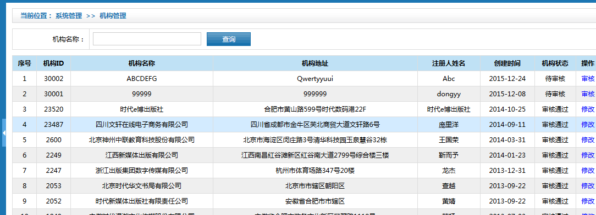

时代出版在线结构化资源库管理系统
建设项目会议纪要
|
会议日期 |
2016-5-13 |
会议时间 |
9：30—12：00 |
|
会议地点 |
时代数码港22楼会议室 |
主 持 人 |
徐唯耀 |
|
会议主题 |
需求原型设计讨论会 |
会议记录 |
毛舒乐 |
|
参会人员 |
昌磊、徐唯耀、吴立刚、毛舒乐、徐亭 |
||
|
会议主要内容 |
|
||
|
会议决议 |
会议讨论确定的主要内容如下： 1.系统原型界面将机构与网络公司后台管理用户登录后展示界面进行区分，包括界面风格、功能菜单展示均需要体现出有区别等； 2. 系统流程主要分为机构上传与教师资源分享两大流程: 机构上传流程：资源入库->资源库管理（标引、提交、提交后系统自动进行资源转换）->资源入库审核（资源属性内容、资源预览、资源转换、资源定价等）->资源任务分配->资源加工->资源审核->产品包组建->产品包发布； 教师分享流程：资源分享（分享后时系统自动进行资源转换）->资源库管理（标引）->资源入库审核（资源属性内容、资源预览、资源转换、资源定价等）->资源任务分配->资源加工->资源审核->产品包组建->产品包发布； 3. 组织机构(资源提供商)与网络公司用户管理范围不同，网络公司用户不对组织机构(资源提供商)系统中下设的用户进行管理，两套系统中系统管理独立；不同组织机构(资源提供商)只能查看本机构下员工用户上传的资源内容；同一组织机构中各用户上传的内容都可以互相查看，暂不需要进行数据级别权限控制； 4. 数字资源库、时代e库采用物理划分的方式进行存储，数字资源库资源审核通过后才存入时代e库，时代e库与产品库采用逻辑划分的方式，不需要存放两个库，产品库实际是时代e库中内容的组合； 5. 资源入库中不需要新建清单，再进行上传资源列表，直接采用上传EXCEL的方式可以实现批量导入的方式即可，Excel模板中信息包括资源名称、资源类型、教材版本、教材属性、资源定价，其中前四项为必填项；需提供批量上传模板下载功能； 6. 资源库管理界面组织机构用户查看界面只需要展示一个界面通过资源列表的方式进行展示，通过资源类型可进行检索分类即可，网络公司用户目前考虑将资源划分为多页面展示的形式，区分为全部资源、文档资源、图片资源等； 7. 资源重传修改功能实际是资源修改重传，资源修改能够对资源属性进行修改以及资源的重传；资源标注功能是修改资源的标引信息，标引信息需引用“教材资源属性管理”标准体系（已有），下拉框选择； 8. 资源定价/重定价只需要在资源入库中提供资源价格录入的功能即可，非必填项，组织机构(资源提供商)可对各资源进行资源定价，也可入库时暂不定价，组织机构(资源提供商)与网络公司线下确定资源包总价（买断式）之后，由学科编辑系统将资源价格采用均摊的方式录入系统； 9. 资源查重功能规则只通过资源名称确认即可，不需兼顾其他属性暂不考虑对具体内容的查重，且查重后，将其中重复的资源标注出来，供系统使用人员作参考； 10. 在资源库管理中增加“资源转换”功能，资源转换在入库审核前进行操作，由系统自动转换、具体转换格式即大小未强制要求，项目组需考虑备用方案，使用开源软件或代码进行转换，资源转换可能需要转换多个版本；如e起扫媒资管理系统可以使用，可直接调用该系统进行转换（目前未确定）。 11. 在资源库管理中增加“审核”功能（入库审核），审核内容包括：资源属性内容、资源预览、资源转换、资源定价等信息。审核通过后进入时代e库，审核不通过反馈教师及机构； 12. 机构资源库管理中资源详情只需要查看资源流转状态即可，其余编辑、审核人、时间等信息不需要展示，增加资源定价字段信息； 13. 任务分配编辑期限作用只做提醒功能，当资源编辑超出期限未完成，通过红色进行区分，不需做其他处理； 14. 学科编辑在对资源进行编辑加工时，包括标引相关资源属性，另外还可以对资源进行在线编辑（word、excel）或者提供资源下载修改后重新上传； 15. 加工管理中的资源审核， “审核”操作界面中增加定价信息审核，另外增加资源预览按钮，可对资源审核时进行预览； 16. “已加工”中修改预览状态按钮去掉，“维护信息”放在时代e库中进行操作，系统设计时需考虑控制到按钮级权限； 17. 时代e库中统计查询保留一个页面，在查询页面中增加报表导出功能； 18. 组建产品包功能增加“修改”、“删除”功能，完成状态包括“已添加产品包属性”、“完成”、“待确认”三种状态；操作中去除“预览”，只保留“详情”； 19. 创建产品包去除“导入产品包策划方案”功能，资源选择弹出框中实现按照产品包基础属性中选择的学科、年级等信息自动过滤资源，功能按钮保留“保存”和“确认提交”，“保存”实现对产品包名称、教材属性、产品简介以及所包括的资源进行选择保存，“确认提交”是最终确认产品包内容，确认之后就不能再进行修改操作。 20. 销售/结算数据由时代教育在线定期推送，可每周或每月推送； 21. 销售/结算查看详情包括资源名称、销售时间、所属产品包、金额； 22. 增加模块“教学资源属性管理”，管理“学科、教材版本、教材体系、知识点管理”等功能； 23. 日志管理增加“真实姓名”字段； 24. 组织机构管理功能界面调整，参照：  25. 与“时代教育在线”互通建设内容中作者认证不需要开发，由时代教育在线完成； 26、与“时代教育在线”互通模块等时代教育在线开发完成后再进行集成具体由昌磊同时代教育在线负责人协调，上方协调完成后，即可以进行互通模块的集成。 |
||
|
会议未决事项 |
1. 资源转换采取方式还需考虑，项目组先自行进行技术调研，设计转换工具，如技术无法实现，昌磊可帮忙联系“e起扫”项目组进行调研； 2. 产品包发布方式需考虑，接口如何设计需与时代教育一起讨论确认。 |
||
|
后续工作要求 |
1. 昌磊提出项目组制定的项目计划适当进行调整，前期需求设计工作可适当延长，以保证后续开发工作避免返工，项目计划由吴立刚进行调整；时间进度本周再讨论一次。 2. 下周后半周（时间暂定周四）对原型进行确认，评审，毛舒乐负责完成原型设计相关工作，周三之前完成原型设计修改及需求规格说明书编写。 |
||